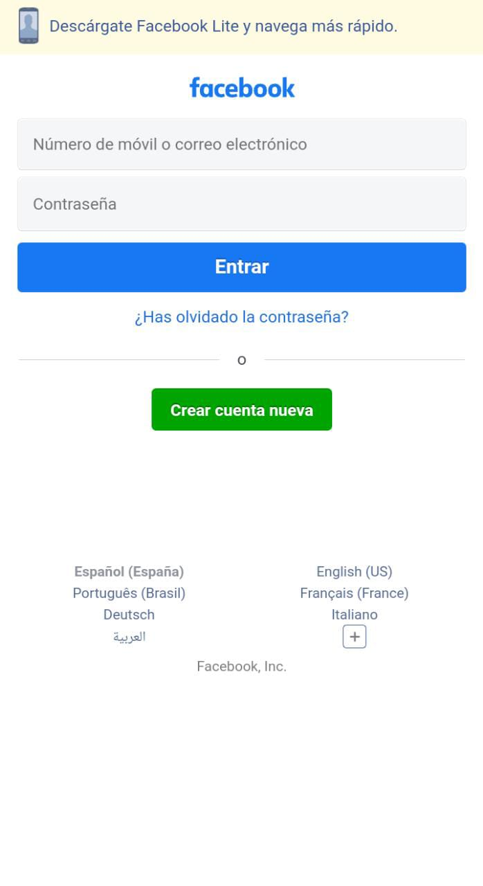
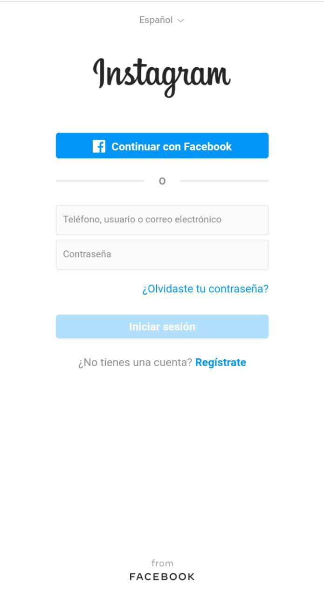

P.A.R.C Alignment
Facebook
The alignment on this facebook login page is simple but it has all the items were it's "confortable" for the eye. It seems to has the right padding and margin between the components and all is well distributed.
White Space & Clean Design
Instagram
The amount of white space in this instagram login page fits the necessary space everyone needs when reading something. Also, has a clean design that means that all is readable and it does not seem as "dirty" to the eyes.
P.A.R.C Contrast
Banco GaliciaFor this site we chose a specific combination of colors in the range of orange, combined with white, creating a perfect harmony orange range, combined with white and light fris, thus creating a perfect harmony between the two, adding shades. adding shades. Combinations were also chosen for the cards, links, titles and buttons. combinations were also chosen for the cards, links, titles and buttons.